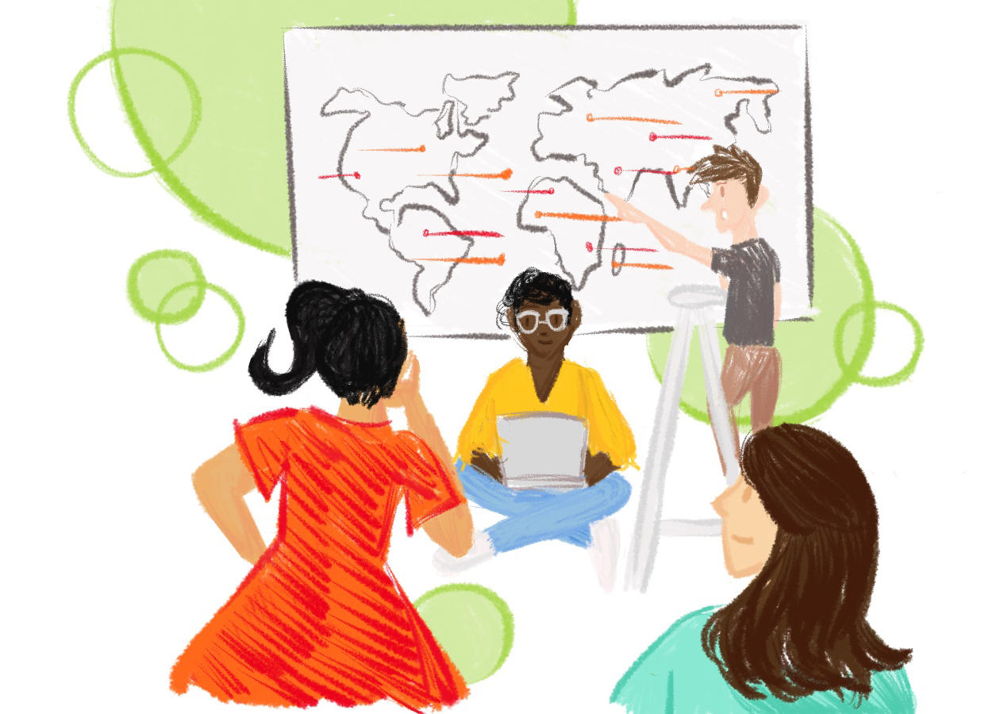
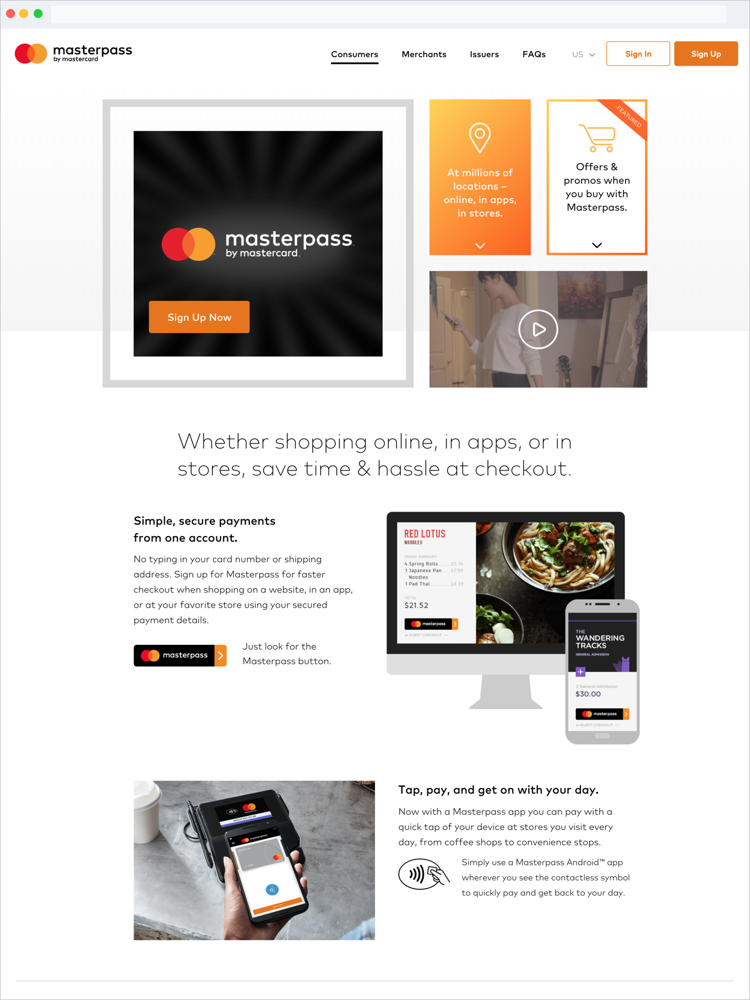
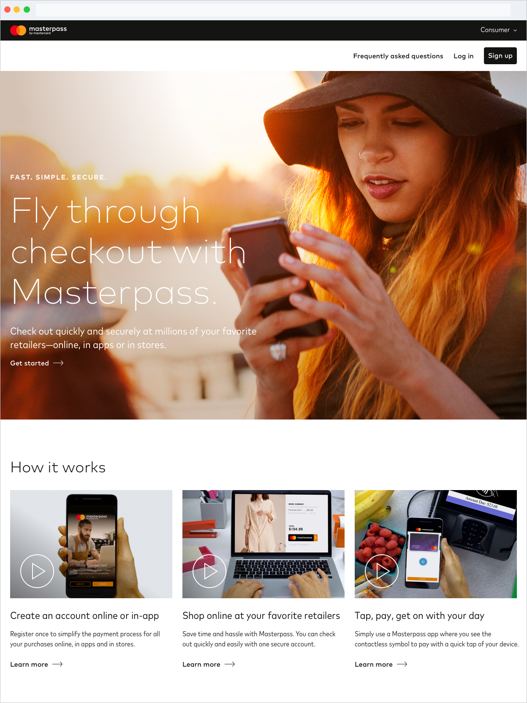
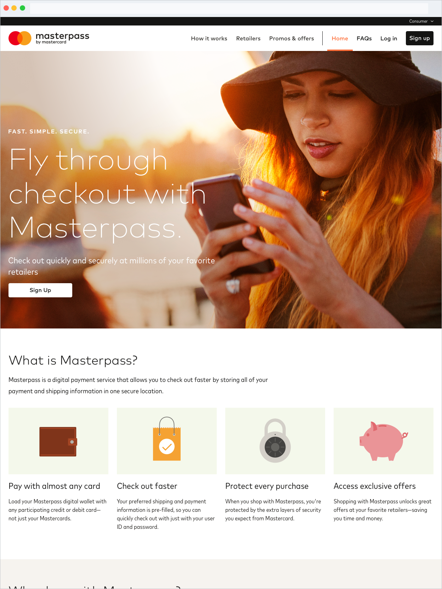
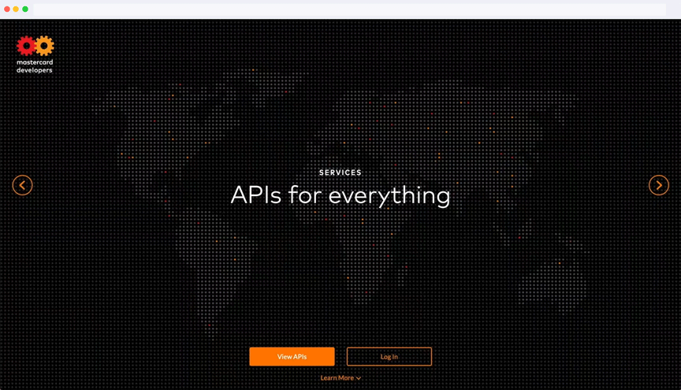

Mastercard
B2B2C UX design and research · Mar 2016 – Jun 2018
I began my professional career at Mastercard as a UX designer on the Digital Payments Experience Design team and about a year on the job, switched to a full-time user researcher role.
Investigating UX and service design needs
As a vital member of our department's small, but mighty, UX research team, I managed qualitative usability research studies from start to finish.
Thanks to my design background, I supported my team wherever my skills were most needed in the process. Some days you'd find me building prototypes with our team’s front-end engineers and others were spent synthesizing user research session notes into key takeaways for leadership.
My past research studies covered topics including:
- Contactless mobile payments
- Desktop and mobile ecommerce experiences
- Automated Clearing House (ACH) payment preferences

Marketing Masterpass to the masses
Note: Masterpass is defunct and has been replaced with Click to Pay.
When Mastercard’s new brand identity was announced in summer 2016, it came as no surprise that Masterpass, the company's flagship digital wallet product, would shortly follow suit. Several other designers and I partnered with the product team to rebuild the marketing website from the ground up.
Redesigning the website was far from easy. We had to create an adaptive, components-based system that was region-agnostic and addressed both B2C (i.e. everyday Masterpass users and B2B (i.e. banks and merchants) needs.
I defined the core user experiences for both audiences, made wireframes, and authored corresponding documentation.
The evolution of masterpass.com
After I transitioned to research full-time, I had the chance to put my designs to the test. My team designed and executed two usability studies focused on getting feedback on the consumers version across both desktop and mobile web.



The conversations we had with 40+ participants challenged our initial assumptions and made us reevaluate our overall design strategy. Their feedback resulted in a clearer, concise experience that was more effective at communicating the product’s value and benefits compared to before.
Team: Lee Hillman, Todd Healy, Susannah Hallagan, Jay Eckert, Brad Roth, and Valerie Matusiak
Ushering in the next era of Mastercard Developers

Mastercard Developers is home to Mastercard APIs and documentation for proprietary digital payment products. I was part of a three-person design squad that refined the website’s experience in the months leading up to its relaunch in summer 2016.
I collaborated with product and engineering teams worldwide to craft content strategy guidelines, assist with quality assurance efforts, and provide design support wherever needed.
Team: Lee Hillman and Amin Nassiri
Putting parents and children first with CoPilot
CoPilot is a proof-of-concept digital payments solution to make it easy for parents to manage their child's transit allowance. The venture was funded by IdeaBox for mass transit — one of Mastercard's in-house innovation challenges.
Mastercard's existing relationships with channel partners, transit authorities, and government entities, coupled with their own payment technologies, made the company well-positioned to provide parents with a safer way to let their child pay for transit.
In my cross-functional team of six, I researched and designed a mobile app prototype walkthrough of two distinct experiences: parent and child.
Although Mastercard leadership chose to not invest in our idea further, CoPilot was granted a patent.
Team: Jean Kim, Jimmy Yuan, Christine Chu, Jo-Anne Loh, David Javitch, and Karin Levi